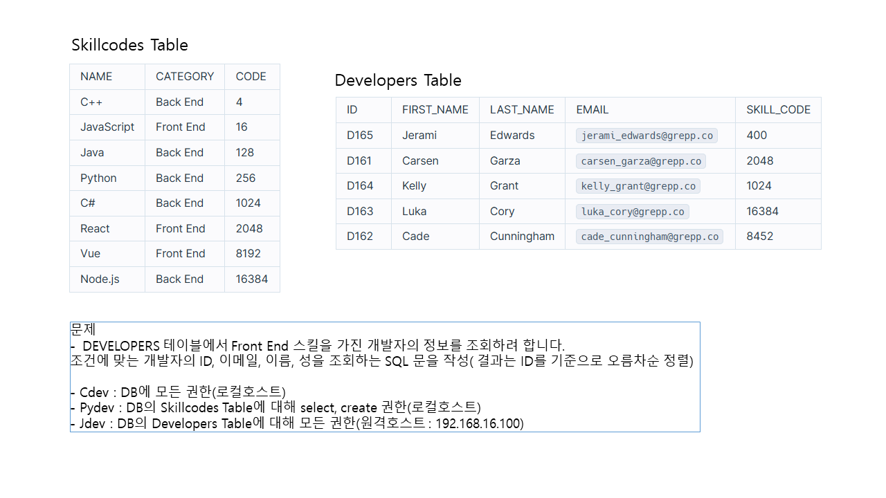

카테고리

Network Setup firewall rule setting
vlan 설정 토폴로지 형식 및 vlan 대역별 이름.

ESW 와 라우터 에서의 설정.

vlan 설정후 통신상태 확인.

방화벽 룰 설정 및 인사이드에서 텔넷 가능확인.

방화벽으로 ftp접속 불가능하게 설정후 테스트.

http 설정및 포트 열기 접속가능 한지 확인.

https 접속할수 있게끔 설정후 접속 가능 확인.

r2 -> r4 로 ssh접속할수있게끔 설정

PMM client와 R3 라우터간의 통신설정 및 확인

Server construction
PMM 서버 구축 및 데이터베이스 연결 후 설정확인

ftp서버 구축 후 파일질라와 window로 접근 가능 설정 후 확인

log analyzer 구축후 데이터베이스 연결 후 클라이언트 서버에서 http재부팅 후 log올라오는지 확인

DNS서버 구축 후 도메인으로 접근 했을때 정상적으로 페이지 구동되는지 확인

Samba 서비스 서버 구축후 테스트

NFS 서버 구축 후 테스트

OSSEC 서버 및 클라이언트 구축후 연결 확인

Zabbix 서버 및 클라이언트 구축후 연결확인

System configuration
wtmp,btmp 파일 위치 확인하기

buffer overflow 발생시키기 실습

password 90일 만료 설정 하기

set uid bit 파일 설정하고 uidbit 파일을 통해 권한상승 실습

password 특수문자 숫자 대문자 소문자 등등의 규칙 정하기

sticky bit 설정 하기



Database - Maria DB
DB dev 생성하기
skillcode생성
DB 유저 에게 권한 부여
DB 명령어를 통해 frontend skill 조회하기

CTF VENUS

CTF userflag 출력
Root 플래그 출력